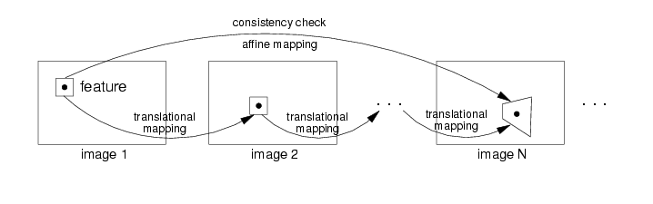

Chapter 8: Affine Consistency Check of Features
During the tracking of features from one frame to the next frame errors can accumulate.
To detect potentially bad features, it is advisable to monitor, if the image signal in the window around the feature in the current frame is still similar to the image signal around the feature in the first frame. Because features are tracked over many frames the image content will be deformed perspectively. For the consistency check the simple translational mapping, which is used for the feature tracking from frame to frame, is often insufficient. Therefore the consistency check can be performed with a similarity or an affine mapping.

You turn on the consistency check of features by changing the tracking context parameter
int affineConsistencyCheck;
You can choose different mappings:
tc->affineConsistencyCheck = -1; /* don't evaluates the consistency (default) */
tc->affineConsistencyCheck = 0; /* evaluates the consistency of features with translation mapping */
tc->affineConsistencyCheck = 1; /* evaluates the consistency of features with similarity mapping */
tc->affineConsistencyCheck = 2; /* evaluates the consistency of features with affine mapping */